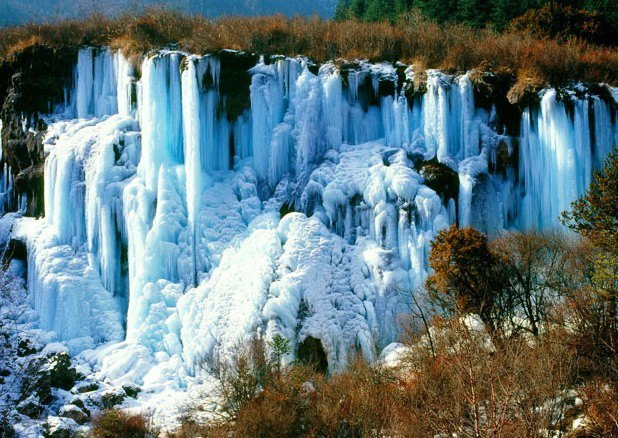

九寨沟——扎如沟冰瀑
扎如沟是九寨沟的第四条沟。沟内山色妩媚，溪流清澈；林中满布地衣，松萝随风摇曳；远山，近树，花团锦簇；野生动物在林中时隐时现，处处透出原始之美。沟内生态环境受人为影响极小，藏民俗文化和生活依旧保持古朴的原生态，在扎如沟不仅可饱览山光水色，更可感受神秘的苯波教独特魅力。
沟内有被当地藏民尊为“万山之祖”的扎依扎嘎，以及丰富的动植物资源，三尖杉、红豆杉、大熊猫、金丝猴、林麝、岩羊等珍稀物种众多，极具生物多样性观赏和藏文化体验价值。沟内主要景点有宝镜崖、扎如桥、扎如林道、扎如马道、扎如寺、扎如瀑布、扎依扎嘎神山、红池、褡裢海、黑海等。